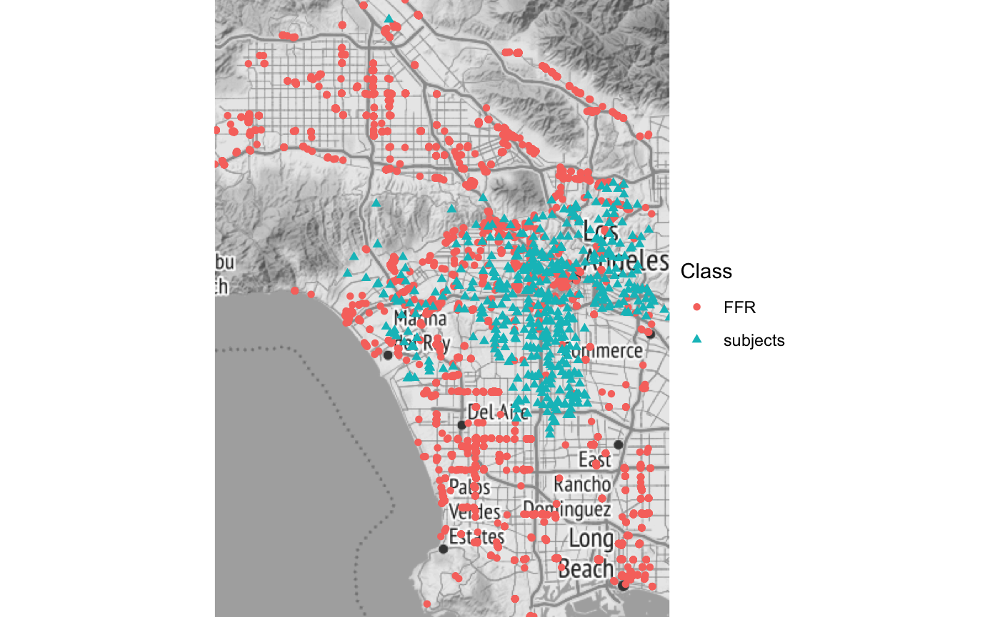

Building_Benvos.Rmdlibrary(rbenvo)
In the Introductory vignette, the benvo class was introduced using subject and built environment feature (BEF) data that had already been joined and calculated. An alternative way to construct benvo’s (as of v1.0.0) is to calculate the distances and times from the Subject and BEF data iteratively. This requires that the data be stored either as an sf object for distance calculation and/or there be date/time information. In this vignette, I’ll demonstrate how to program this iterative construction beginning with an example where there is spatial data, covering temporal data subsequently.
We’ll begin with a look at two datasets composed of subject and BEF data respectively that can be procured publicly via the California Department of Education and the osmdata package respectively (See here for how I downloaded these data). The former dataset contains information on 5th, 7th and 9th graders’ obesity at schools through the state of California, though we’ll focus on those schools and restaurants in Los Angeles for ease of exposition.
LA_schools #> # A tibble: 1,686 x 9 #> cdscode Charter N Grade Percent NoStud_Overweig… NoStud_NotOverw… #> <chr> <fct> <dbl> <fct> <dbl> <dbl> <dbl> #> 1 141014… Charter 19 5 0 0 19 #> 2 141014… Charter 19 7 0 0 19 #> 3 141014… Charter 19 9 47.4 9 10 #> 4 191019… Charter 92 5 0 0 92 #> 5 191019… Charter 92 7 35.9 33 59 #> 6 191019… Charter 92 9 0 0 92 #> 7 191019… Charter 44 5 0 0 44 #> 8 191019… Charter 44 7 0 0 44 #> 9 191019… Charter 44 9 52.3 23 21 #> 10 191019… Tradit… 99 5 0 0 99 #> # … with 1,676 more rows, and 2 more variables: Latitude <dbl>, Longitude <dbl>
The latter dataset contains businesses labeled as “Fast Food” in the Los Angeles Area, by users of openstreetmap, a crowd-sourcing map tool which allows users to document different areas of their environment.
LA_FF #> # A tibble: 6,621 x 4 #> Name osm_id Latitude Longitude #> <chr> <chr> <dbl> <dbl> #> 1 <NA> 60713740 -118. 34.1 #> 2 Yoshinoya 72448982 -118. 34.1 #> 3 Jack in the Box 72448995 -118. 34.1 #> 4 Baja Fresh 344723703 -118. 34.2 #> 5 Jersey Mike's Subs 344723888 -118. 34.2 #> 6 Taco Bell 344727689 -118. 34.2 #> 7 Baja Fresh 349339405 -118. 34.1 #> 8 Chipotle 349340479 -118. 34.1 #> 9 Subway 354910320 -118. 34.3 #> 10 <NA> 358019457 -118. 34.2 #> # … with 6,611 more rows
In order to prepare these data for use in a benvo, we’ll convert them to sf objects using the sf::st:as_sf() function as follows. Note that while these data are sfc_POINT objects, they could be any sf object, provided they have a location and a measure of distance can be calculated between the subject and bef data frames.
To create a benvo, we use the same benvo() function as used with pre-calculated data, but we now specify the unique subject id so the object can correctly link future data tables.
benvo(LA_schools,by='cdscode') #> Active df: subject #> Simple feature collection with 1686 features and 7 fields #> geometry type: POINT #> dimension: XY #> bbox: xmin: -118.4958 ymin: 33.90556 xmax: -118.136 ymax: 34.29046 #> geographic CRS: WGS 84 #> # A tibble: 1,686 x 8 #> cdscode Charter N Grade Percent NoStud_Overweig… NoStud_NotOverw… #> * <chr> <fct> <dbl> <fct> <dbl> <dbl> <dbl> #> 1 141014… Charter 19 5 0 0 19 #> 2 141014… Charter 19 7 0 0 19 #> 3 141014… Charter 19 9 47.4 9 10 #> 4 191019… Charter 92 5 0 0 92 #> 5 191019… Charter 92 7 35.9 33 59 #> 6 191019… Charter 92 9 0 0 92 #> 7 191019… Charter 44 5 0 0 44 #> 8 191019… Charter 44 7 0 0 44 #> 9 191019… Charter 44 9 52.3 23 21 #> 10 191019… Tradit… 99 5 0 0 99 #> # … with 1,676 more rows, and 1 more variable: geometry <POINT [°]>
In order to construct the new table of subj-BEF distances and incorporate the bef table into the relational data structure of the benvo, the appropriately named add_BEF() function works much like it sounds. We can then activate the restaurant table in order to look at the distances.
benvo(LA_schools,by='cdscode') %>% add_BEF(FFR,bef_id = 'osm_id') %>% activate(FFR) -> bdf #> Linking to GEOS 3.8.1, GDAL 3.1.1, PROJ 6.3.1 bdf #> Active df: FFR #> # A tibble: 11,163,006 x 3 #> cdscode osm_id Distance #> <chr> <chr> [m] #> 1 14101400128454 60713740 19717.047 #> 2 14101400128454 60713740 19717.047 #> 3 14101400128454 60713740 19717.047 #> 4 19101990134361 60713740 17167.510 #> 5 19101990134361 60713740 17167.510 #> 6 19101990134361 60713740 17167.510 #> 7 19101990135582 60713740 17606.308 #> 8 19101990135582 60713740 17606.308 #> 9 19101990135582 60713740 17606.308 #> 10 19101991933399 60713740 5907.847 #> # … with 11,162,996 more rows
As can be seen here, the add_BEF() function uses the sf::st_distance function by default which returns a distance (great circle distance in this case) according to the coordinate reference system set for the sf objects. In this case the units are meters , but we can convert them to km and remove those pairings that are greater than 10km using the dplyr verbs adapted to function on whatever table is currently active in the benvo. Since we have repeat measurements for each school we have multiple distances for each school when we only need 1, so we’ll use a combination of filter and distinct to remove the duplicate and extraneous (>10 km) distances:
bdf <- bdf %>% mutate(Distance = as.numeric(Distance/1E3)) %>% filter(Distance<=10) %>% distinct(cdscode,osm_id,Distance) bdf #> Active df: FFR #> # A tibble: 489,034 x 3 #> cdscode osm_id Distance #> <chr> <chr> <dbl> #> 1 19101991933399 60713740 5.91 #> 2 19647330100289 60713740 9.89 #> 3 19647330100867 60713740 9.55 #> 4 19647330101683 60713740 5.48 #> 5 19647330102426 60713740 6.37 #> 6 19647330106435 60713740 9.36 #> 7 19647330108886 60713740 7.89 #> 8 19647330109439 60713740 3.22 #> 9 19647330110304 60713740 8.82 #> 10 19647330111658 60713740 5.91 #> # … with 489,024 more rows
While we could get a sense of the distribution of distances using the plot_pointrange() function as illustrated in the Introductory vignette, instead, here we’ll use the plot_map() function, via the plot which will produce a ggplot object of the spatial objects distinguished as BEF or subject by color on a map defined by the boundaries of the combined sf objects, using ggmap to request the underlying stamen map.
plot(bdf,'map') + ggplot2::theme_bw() + ggplot2::theme_void() #> Source : http://tile.stamen.com/terrain/10/174/407.png #> Source : http://tile.stamen.com/terrain/10/175/407.png #> Source : http://tile.stamen.com/terrain/10/174/408.png #> Source : http://tile.stamen.com/terrain/10/175/408.png #> Source : http://tile.stamen.com/terrain/10/174/409.png #> Source : http://tile.stamen.com/terrain/10/175/409.png #> Coordinate system already present. Adding new coordinate system, which will replace the existing one.

Finally, while benvo’s are useful for making the construction and manipulation of built environment data easier, as shown above, they also facilitate the use of this relational data for model fitting via, for example the rsstap package, which we can use to estimate the association of restaurant proximity to schools with the probability of obesity at those schools.
We’ll fit a simple model below, with the emphasis here on simple since we’re using open street map data, which may be considered less than authoritative and, additionally, we are not including relevant covariates such as parent’s education and income which have been shown to affect a child’s propensity to be obese. So this model is more for illustrative purposes, rather than offering anything approaching definitive.
library(rsstap) fit <- sstap_glmer(cbind(NoStud_OverweightObese,NoStud_NotOverweightObese) ~ Charter + Grade + sap(FFR) + (1|cdscode), benvo=bdf, family=binomial())
Plotting the results below, we can see that the model estimates an increase in the odds of a child’s obesity for each FFR placed within roughly one kilometer of the school. A result that, while not fully credible at the 95% level, may not surprise us.
plot(fit)
Having looked at how benvo’s handle spatial data, we’ll now turn to temporal data.
Similar to how one may have spatial data available for built environment features and subjects it’s also possible to have temporal data, describing the time a subject spent at a specific location. Depending on the analysis spatial and temporal structures can both be quite complex, as before we’ll illustrate how temporal data can be incorporated into a benvo with cross-sectional temporal data where each subject is only associated with one time point. More complex temporal data, where there are multiple time points associated with each subject, as in the case of longitudinal data, will be incorporated in a future release.
We’ll begin by simulating dates for the Los Angeles Schools that have fifth graders and Fast Food Restaurant data. We’ll set all schools to start sometime in the fall, and have the business arbitrarily open and close sometime after 2015.
set.seed(342431) LA_schools_five <- LA_schools %>% filter(Grade==5) origin <- lubridate::as_date("2018-08-01") school_start <- origin+sample(1:120,size = nrow(LA_schools_five),replace = TRUE) measure_date <- lubridate::as_date("2019-05-01") close_date <- measure_date business_start_date <- origin + sample(-786:786,size = nrow(LA_FF),replace = TRUE) business_close_date <- business_start_date + sapply((lubridate::today()-business_start_date),function(x) sample(1:x,1)) FFR <- LA_FF %>% mutate(open=business_start_date,close=business_close_date) schools <- LA_schools_five %>% mutate(open=school_start,measure=measure_date,close=close_date)
We create the benvo using the same function as before, but now including the optional arguments that specify the start,measurement, and stop date columns for each subject observation which are each vectors of lubridate::Date objects. These must be named similarly in any subsequent BEF table that is then added, as in the FFR example here. The benvo() function uses these date columns to then construct the time exposed, labeled as Time and exposure lag (time between the end of the exposure period and the current measurement date)
bdf <- benvo(schools, start_date_col="open", measurement_date="measure", stop_date_col="close",by='cdscode') %>% add_BEF(FFR,bef_id = 'osm_id')
We can look at the constructed times, by activating the FFR table.
bdf %>% activate(FFR) %>% select(-open,-close) ## for better display #> Active df: FFR #> # A tibble: 1,842,122 x 7 #> cdscode measure open_FFR close_FFR osm_id Time exposure_lag #> <chr> <date> <date> <date> <chr> <drtn> <drtn> #> 1 141014001284… 2019-05-01 2016-06-06 2019-03-03 42835540… 98 da… 59 days #> 2 141014001284… 2019-05-01 2016-06-06 2020-04-22 40984406… 157 da… 0 days #> 3 141014001284… 2019-05-01 2016-06-06 2020-05-22 38870735… 157 da… 0 days #> 4 141014001284… 2019-05-01 2016-06-07 2019-03-15 75921499… 110 da… 47 days #> 5 141014001284… 2019-05-01 2016-06-07 2020-05-06 56421932… 157 da… 0 days #> 6 141014001284… 2019-05-01 2016-06-09 2019-05-15 40975707… 157 da… 0 days #> 7 141014001284… 2019-05-01 2016-06-09 2019-08-26 42011494… 157 da… 0 days #> 8 141014001284… 2019-05-01 2016-06-09 2020-07-28 42026373… 157 da… 0 days #> 9 141014001284… 2019-05-01 2016-06-10 2019-01-12 43003660… 48 da… 109 days #> 10 141014001284… 2019-05-01 2016-06-10 2019-08-31 45210825… 157 da… 0 days #> # … with 1,842,112 more rows
Similar to how the distances were calculated in specific units from the sf::st_distance() function, the lubridate function calculates differences in times according to the granularity of the data. Here since we have information available in days, we calculate differences in units of days. These can be altered according to user preference, as before using the dplyr verb functions and converting times according to the functions in the lubridate package.
To finish off this section we’ll highlight a timeline plot that is currently available for visualizing the temporal exposure for subjects. The plot below shows when the different schools opened and closed. Since we’re showing all schools were closed and measured at the same time, we have a uniform line at the right side. This is just a feature of how we constructed the data, but it could be different. As the starting times show variability on the left hand side of the plot, it is not hard to imagine a setting in which there’d be similar variability for closing and measure times.
plot(bdf,'time')
This vignette demonstrated how to construct benvos iteratively using raw location and temporal data of subject and BEFs as well as how to manipulate and display the constructed data. We also showed a quick example highlighting how these objects are used in other packages, like rsstap, to understand how BEF’s may impact human health in a sample analysis using data that can be accessed publicly from the internet. It is my hope that this package makes working with the very particular relational structure of built environment data, easier and more accessible for those interested in studying it.